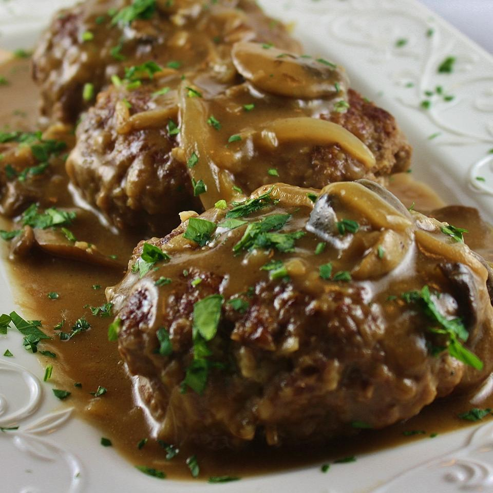

Salisbury Steak

Salisbury Steak
If your tired of boring, tasteless Salisbury steak try this one. Use good ground sirloin,
and it'll taste wonderful and you won't have any grease to drain from the patties once
they've browned. Serve over mashed potatoes, egg noodles, or rice. Simply delightful!
Ingredients
- 1 pound ground sirloin
- ½ cup panko bread crumbs
- 1 egg, beaten
- 2 tablespoons milk
- ½ (1 ounce) package dry onion soup mix
- 1 teaspoon Worcestershire sauce
- ¼ teaspoon ground black pepper
Directions
- Mix ground sirloin, panko bread crumbs, egg,
milk, and 1/2 packet onion soup mix, Worcestershire
sauce, and black pepper together in a large bowl;
shape into 5 patties.
- Heat a skillet over medium heat. Cook patties in
hot skillet until browned, 3 to 5 minutes per side.
- Melt butter in a separate skillet over medium-high heat. Saute mushrooms and onion in melted butter until
tender, 5 to 7 minutes. Stir flour and remaining dry onion soup mix into the mushroom mixture; cook and stir
until flour is integrated fully, about 1 minute. Stream beef stock and water over the mushroom mixture while
stirring continually; bring to a simmer, reduce heat to medium, and cook, stirring frequently, until the
liquid thickens, about 5 minutes. Season with salt and pepper.
- Lie the browned steaks into the gravy; simmer until steaks are firm and gray in the center, about 30
minutes. An instant-read thermometer inserted into the center should read 160 degrees F (70 degrees C).